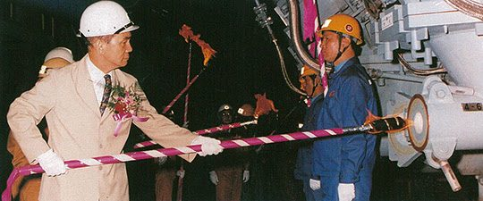
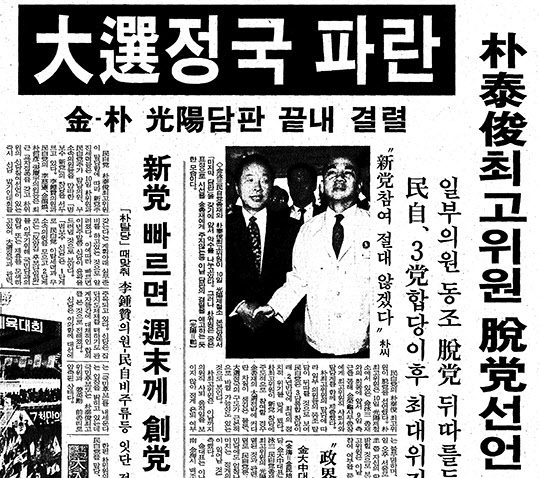

보도일 2015-05-27출처 조선일보 프리미엄조선 연재
박태준이 박정희와 약속한 ‘철강 2000만 톤 시대’를 완전히 실현한 때는 1992년 10월 2일, 박정희가 세상을 떠난 지 13년 만이었다. 생전의 박정희가 박태준에게 마지막 선물로 안겨준 제2제철소를 연산 1200만 톤 체제의 광양제철소로 완공한 그날, 포스코는 포항제철소와 광양제철소를 합쳐 연산 2100만 체제를 갖추었다. 장장 25년 인생을 바쳐 박정희와의 약속을 실현한 그날, 박태준의 영혼에는 희열과 회한, 영광과 고통이 뒤엉켜 뜨거운 응어리로 맺힌 가운데 박정희 사후의 숱한 곡절들이 파노라마처럼 스쳐 지나갔다.

전두환의 요청으로 정계(政界)에 한 발을 들여놓을 때 ‘박정희 대통령 대신 이제는 내 스스로 정치적 외풍을 막아내는 포스코의 울타리가 되어야 한다’고 되뇌었던 다짐, 포스코 측근들에게 “박정희 대통령 서거 후에는 내 능력의 9할을 외풍 막기에 쓰는 거 같다”고 몇 차례나 토로했을 만큼 참으로 힘들었던 그 실천, 노태우의 거듭된 강요를 끝까지 뿌리칠 수 없어서 하루아침에 여당(민정당) 대표로 나설 수밖에 없었던 일, 곧이어 벌어진 노태우-김영삼-김종필의 3당 합당을 한 걸음 늦어서 알게 되었을 때의 분노, 여당(민자당)의 대통령 후보 경선에 나서려 했으나 김영삼의 ‘박태준 배제 경선 요구’에 굴복한 노태우마저 앞을 가로막으니 깊은 한숨을 들이쉬고 하릴없이 접어야 했던 좌절….
이제 대통령선거를 앞둔 때에 스스로 다스려지지 않는 여당 대통령 후보 김영삼에 대한 실망감, 그리고 그것이 미구에 야기할 심각한 갈등에 대한 예견, 종합준공식이 끝나는 대로 김영삼과 결별하고 정계를 은퇴하며 포스코 회장직에서도 물러나겠다는 확고한 결심.

박태준은 그해 10월 중순을 넘기지 않아 세 가지 결심을 그대로 실천한다. 정계를 은퇴하고 포스코 회장을 자진 사임한 박태준은, 대통령 당선이 확실시되는 김영삼이 광양제철소까지 몸소 찾아와 ‘선거대책위원장을 맡아 달라’고 부탁하지만 끝내 ‘김영삼은 구국의 지도자가 될 수 없다’는 자신의 평가를 양보하지 않는다. 그리고 비싼 대가를 돌려받는다.
김영삼이 대통령으로 취임한 이듬해 봄날, 박태준은 느닷없이 외국 유랑의 길로 나서게 되는 것이다. 광양에서 벌어진 김영삼과 박태준의 ‘4시간 담판’, 그 결렬이 박태준에게는 ‘외국 유랑 4년’으로 돌아온 격이었다고나 할까….
1992년 10월 2일, 눈부신 쪽빛 가을날, 광양제철소 종합운동장 내빈석 꼭대기에는 ‘포항제철 4반세기 대역사 종합준공’이라는 현수막이 걸려 있었다. 대역사를 마무리 짓는 장엄한 식장에 1만2000여 명이 모였다. 노태우 대통령, 세계 철강업계 지도자들, 주한 미국대사를 포함한 외교사절들, 국내외 취재진, 박태준 회장과 임직원, 지역사회의 축하객…. 그러나 꼭 있어야 하는 한 얼굴을 박태준은 찾을 수 없었다.
그것이 그에게는 누구도 알지 못하는 어마어마한 회한이었다. 단상에 마련된 자리에 앉은 그는 잠시 눈을 감았다. 잔잔한 바람결이 문득 귀에 익은 음성을 들려주었다. 언젠가 그 사람과 나누었던 속삭임 같은 대화의 한 토막이었다. <②편에서 계속>